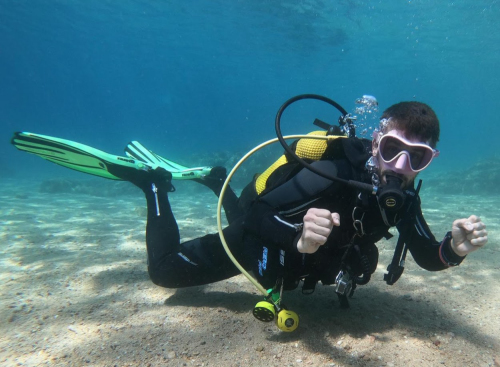
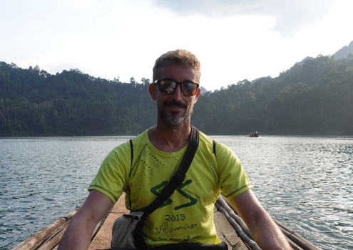

¿Quién soy?
Mi nombre es Israel Medrano. Soy instructor de buceo freelance oficial de SSI, y actualmente vivo en Japón.
Comencé a bucear en 2017 cuando hice mi curso Open Water Diver no muy convencido de que el buceo fuera para mí, hasta el momento en que entré al agua por primera vez... La calma, el silencio, la sensación de ingravidez, la vida marina... ¡todo! me pareció increíblemente hermoso; y desde ese mismo momento supe que el buceo sería importante en mi vida.

En los años siguientes, estuve compatibilizando mi trabajo de maestro de primaria con la formación de buceo. Durante varios veranos realizaba mi "staff" durante las vacaciones de verano, formándome y avanzando en mi carrera de buceador, de la mano de TossaSub, unos auténticos profesionales. Gracias a ellos, logré alcanzar el status de Instructor, dejé mi trabajo y estuve trabajando un par de temporadas estivales con ellos, donde seguí avanzando como instructor.
Gracias a mis años de experiencia como maestro, transmitir mi pasión y mi amor por el mar, no se me hacía muy difícil, y según algunos de mis alumnos, no se me daba nada mal.

Durante el invierno de 2023 decidí ampliar fronteras y busqué trabajo en el sudeste asiático. En apenas unos días, y gracias a unos grandes amigos, encontré trabajo en la isla paradisíaca de Koh Liphe, en Tailanda, trabajando con Pura Vida, donde estuve trabajando 3 meses, hasta que los exámenes de mis nuevos estudios me reclamaron.
En 2025 decidí mudarme a Japón, y por supuesto, lo primero que metí a la maleta fue todo mi equipo de buceo, y desde la primera semana que llegué al país nipón, he estado recorriendo puntos de buceo de este maravilloso país, y te aseguro que hay cientos de ellos.

A día de hoy, he realizado más de 1.000 inmersiones en distintos entornos, desde arrecifes tropicales hasta costas volcánicas, siempre con el mismo objetivo: disfrutar del mar y compartir ese respeto y fascinación con otras personas.
Actualmente trabajo como guía freelance adherido a un centro de Atami, "The wind drops", donde también imparto diferentes cursos, desde el OWD a algunos más avanzados como buceo profundo o traje seco.
Me gusta mucho transmitir la paz y el bienestar que proporciona el océano, por lo que mis inmersiones son tranquilas, sin prisas, optando más por tener una buena sensación y disfrutar de la inmersión que por ver muchas cosas o hacer grandes rutas.